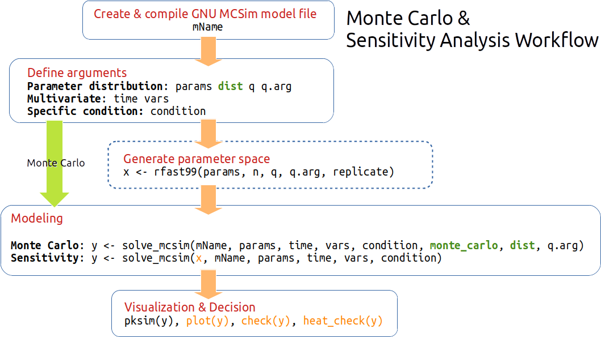
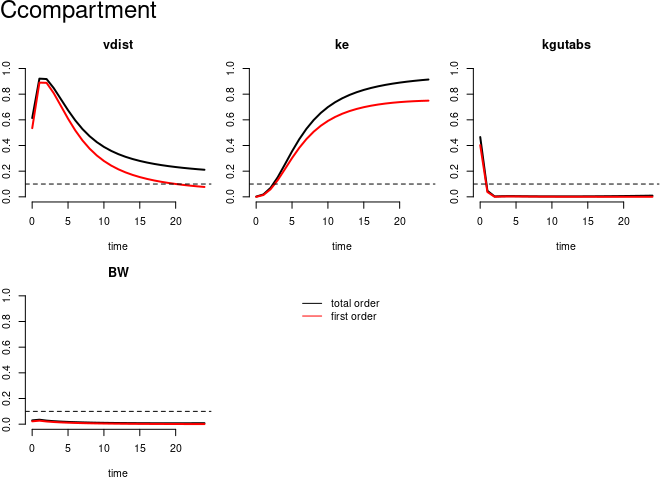

pksensi implements the global sensitivity analysis workflow to investigate the parameter uncertainty and sensitivity in physiologically based kinetic (PK) models, especially the physiologically based pharmacokinetic/toxicokinetic model with multivariate outputs. The package also provides some functions to check the convergence and sensitivity of model parameters.
Through pksensi, you can:
Run sensitivity analysis for PK models in R with script that were written in C or GNU MCSim.
Decision support: The output results and visualization tools can be used to easily determine which parameters have “non-influential” effects on the model output and can be fixed in following model calibration.
Installation
You can install the released version of pksensi from CRAN with:
install.packages("pksensi")And the development version from GitHub with:
# install.packages("remotes")
remotes::install_github("nanhung/pksensi")This package includes a function that can help you install GNU MCSim more easily through the function
mcsim_install().All updated details can be found in NEWS.md.
NOTE: Windows users need to install Rtools40 to compile the model code.
Workflow

Note: The parameter correlation (e.g., Vmax and KM in metabolism) might be an issue in the global sensitivity analysis. If you have experiment data, suggest using small datasets as a sample in Markov Chain Monte Carlo Simulation. Then, check correlation before conducting the sensitivity analysis. The issue will try to address in the future version.
Example
This is a basic example of applying pksensi in one-compartment pbtk model:
Step 1. Construct 1-cpt pbtk model
pbtk1cpt <- function(t, state, parameters) {
with(as.list(c(state, parameters)), {
dAgutlument = - kgutabs * Agutlument
dAcompartment = kgutabs * Agutlument - ke * Acompartment
dAmetabolized = ke * Acompartment
Ccompartment = Acompartment / vdist * BW;
list(c(dAgutlument, dAcompartment, dAmetabolized),
"Ccompartment" = Ccompartment)
})
}Step 3. Generate parameter matrix
3.1. (Optional) Extract parameter value from httk package
library(httk)
pars1comp <- (parameterize_1comp(chem.name = "acetaminophen"))
#> Human volume of distribution returned in units of L/kg BW.Step 4. Conduct simulation (will take few minutes with more replications)
out <- solve_fun(x, time = t, func = pbtk1cpt, initState = initState, outnames = outputs)
#> Starting time: 2024-11-27 07:07:16.85445
#> Ending time: 2024-11-27 07:07:25.711756Step 6. Check and visualize the result of sensitivity analysis
plot(out) # Visualize result
check(out) # Print result to console
#>
#> Sensitivity check ( Index > 0.05 )
#> ----------------------------------
#> First order:
#> vdist ke kgutabs
#>
#> Interaction:
#> vdist ke kgutabs
#>
#> Total order:
#> vdist ke kgutabs
#>
#> Unselected factors in total order:
#> BW
#>
#>
#> Convergence check ( Index > 0.05 )
#> ----------------------------------
#> First order:
#>
#>
#> Interaction:
#>
#>
#> Total order:
#> Citation
To cite pksensi in publications use:
Hsieh, N-H., Reisfeld B., and Chiu W.A., (2020). pksensi: An R
package to apply global sensitivity analysis in physiologically based
kinetic modeling SoftwareX, 12, 100609.
https://doi.org/10.1016/j.softx.2020.100609
A BibTeX entry for LaTeX users is
@Article{,
title = {{pksensi}: An R package to apply global sensitivity analysis in physiologically based kinetic modeling},
author = {Nan-Hung Hsieh and Brad Reisfeld and Weihsueh A. Chiu},
journal = {SoftwareX},
year = {2020},
volume = {12},
pages = {100609},
doi = {10.1016/j.softx.2020.100609},
}Reference
Hsieh NH, Reisfeld B, Bois FY, Chiu WA. Applying a global sensitivity analysis workflow to improve the computational efficiencies in physiologically-based pharmacokinetic modeling. Frontiers in Pharmacology 2018 Jun; 9:588.
Hsieh NH, Reisfeld B, Chiu WA. pksensi: An R package to apply global sensitivity analysis in physiologically based kinetic modeling. SoftwareX 2020 Jul; 12:100609.
Hsieh NH, Bois FY, Tsakalozou E, Ni Z, Yoon M, Sun W, Klein M, Reisfeld B, Chiu WA. A Bayesian population physiologically based pharmacokinetic absorption modeling approach to support generic drug development: application to bupropion hydrochloride oral dosage forms. Journal of Pharmacokinetics and Pharmacodynamics 2021 Sep; 22:1-6.